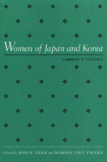

<body bgcolor="#FFFFFF" text="#000000" link="#0000FF" vlink="#CC0000" alink="#CC0000"><center><hr width="350" size="1" align="center" noshade>Original research on the changing roles of women in Japan and Korea<hr width="350" size="1" align="center" noshade><p><a href="https://cdcshoppingcart.uchicago.edu/Cart/ChicagoBook.aspx?ISBN=9781566392235&&PRESS=temple" target="_top">Buy this book!</a> | <a href="https://cdcshoppingcart.uchicago.edu/Cart/Cart.aspx?PRESS=temple" target="_top">View Cart</a> | <a href="https://cdcshoppingcart.uchicago.edu/Cart/Cart.aspx?PRESS=temple" target="_top">Check Out</a></p><p></p></center><!--none//--><h1>Women of Japan and Korea</h1>
<H2>Continuity and Change</H2>
<h3>edited by Joyce Gelb and Marian Lief Palley</h3>
<P>cloth 1-56639-223-3 $69.95, Nov 94, <FONT COLOR=#990033>Out of Print</FONT>
<br>paper 1-56639-224-1 $31.95, Nov 94, <FONT COLOR=#990033>Available</FONT>
<br>Electronic Book 1-43990-096-5 $31.95 <FONT COLOR=#990033>Out of Print</FONT>
<BR> 320 pp
6x9
30&nbsp;tables 8&nbsp;figures
</P><p>This collection presents new research on the changing roles of women in Japan and Korea. At a time when women in these two countries are becoming more politically and socially prominent, these essays provide insight into the clashes that have arisen between tradition and change. The contributors compare similarities and differences in the two cultures, considering family life, education, health care, work, reproductive and legal rights, and political participation, including the rise of women's movements in Asia and the battle against sexism and gender stereotyping. Essays written by Japanese and Korean women, leading social scientists and practitioners, illuminate the current political, economic, and social status of women in Japan and Korea.
<BR>&nbsp;<h2>Excerpt</h2><P>Excerpt available at <a href="http://www.temple.edu/tempress">www.temple.edu/tempress</a></p>
<BR>&nbsp;<h2>Contents</h2><P>
<p>1. Introduction &#150 Joyce Gelb and Marian Lief Palley
<p><b>Part I: Japanese Women</b>
<br>2. Women and the Family in Transition in Postindustrial Japan &#150 Chizuko Ueno
<br>3. Women's Education and Gender Roles in Japan &#150 Kumiko Fujimura-Fanselow and Atsuko Kameda
<br>4. Abortion and Women's Reproductive Rights: The State of Japanese Women, 1947-1991 &#150 Miho Ogino
<br>5. Women Workers in Japan: Past, Present, Future &#150 Eiko Shinotsuka
<br>6. Obstacles and Opportunities: Women and Political Participation in Japan &#150 Kimiko Kubo and Joyce Gelb
<br>7. A Short History of the Feminist Movement in Japan &#150 Sandra Buckley
<p><b>Part II: Korean Women</b>
<br>8. Six Barriers to Equality for Women in Korea &#150 Elizabeth Choi
<br>9. Overcoming Confucian Barriers: Changing Educational Opportunities for Women in Korea &#150 Ho Kyung Won
<br>10. Korean Women's Groups, Social Movements, and Health &#150 Lisa Kim Davis
<br>11. Women Workers in a Changing Korean Society &#150 Roh Mihye
<br>12. Agenda for Social Reform: Women's Political Participation in Sough Korea &#150 Sohn Bong Scuk
<br>13. Feminism in a Confucian Society: The Women's Movement in Korea &#150 Marian Lief Palley
<p>About the Contributors
<br>Index
</P><BR>&nbsp;<H2>About the Author(s)</H2>
<P><b>Joyce Gelb</b> is Professor of Political Science and Director of the Program in Women's Studies and the Center for Research on Women in Society at the Graduate Center, City University of New York.</P>
<P><b>Marian Lief Palley</b> is Professor of Political Science and International Relations at the University of Delaware. The two have co-authored several books together, most recently <I>Women and Public Policies</I>.</P>
<P>Contributors: Chizuko Ueno, Kumiko Fujimura-Fanselow, Atsuko Kameda, Miho Ogino, Eiko Shinotsuka, Kimiko Kubo, Sandra Buckley, Elizabeth Choi, Ho Kyung Won, Lisa Kim Davis, Roh Mihye, Sohn Bong Scuk, and the editors.</P>
<BR><H2>Subject Categories</H2>
<p><A HREF="/tempress/women.html" TARGET="_top">Women's Studies</a>
<BR><A HREF="/tempress/political.html" TARGET="_top">Political Science and Public Policy</a>
<BR><A HREF="/tempress/asian.html" TARGET="_top">Asian Studies</a>
</p>
<BR><h2 class="inpageheading">In the series</H2>
<P><I><a href="http://www.temple.edu/tempress/women_political.html" onMouseOver="window.status='Click for other books in this series!'; return true;" onMouseOut="window.status=''; return true;" target="_top">Women in the Political Economy</a></i>, edited by Ronnie J. Steinberg.
</p><p>No longer active.<p><i>Women in the Political Economy</i>, edited by Ronnie J. Steinberg, includes books on women and issues of work, family, social movements, politics, feminism, and empowerment. It emphasizes women's roles in society and the social construction of gender and also explores current policy issues like comparable worth, international development, job training, and parental leave.</p>
<p align="center"><a href="https://cdcshoppingcart.uchicago.edu/Cart/ChicagoBook.aspx?ISBN=9781566392235&&PRESS=temple" target="_top">Buy this book!</a> | <a href="https://cdcshoppingcart.uchicago.edu/Cart/Cart.aspx?PRESS=temple" target="_top">View Cart</a> | <a href="https://cdcshoppingcart.uchicago.edu/Cart/Cart.aspx?PRESS=temple" target="_top">Check Out</a></p><p><font face="Arial" size="1"><a href="copyright.html" onMouseOver="window.status='Web Copyright Policy';return true;" onMouseOut="window.status=''" title="Web Copyright Policy">&copy;</a> 2015 <a href="http://www.temple.edu" target="new" onMouseOver="window.status='Link to Temple University home page';return true;" onMouseOut="window.status=''" title="Link to Temple University home page">Temple University</a>. All Rights Reserved. http://www.temple.edu/tempress/titles/926_reg.html</font></p>